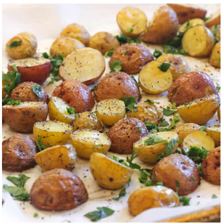

20 adet bebek patates 1/2çay bardağı zeytinyağı 1 yemek kaşığı biberiye 1 çay kaşığı tuz 1 çay kaşığı karabiber 1çay kaşığı toz kırmızı biber

Patatesleri güzelce yıkıyoruz boyutlarına göre ikiye bölebiliriz.
Ardından bir kapta tüm malzemeleri karıştırıp. Yağlı kağıt serili fırın tepsisine alıp fırına veriyoruz.
Ardından bir kaba alıp diğer malzemeleri ekleyip güzelce karıştırıyoruz.
Yağlı kağıt serili fırın tepsisine alıyoruz.
Fırında kızarana kadar pişiriyoruz. Afiyet olsun.